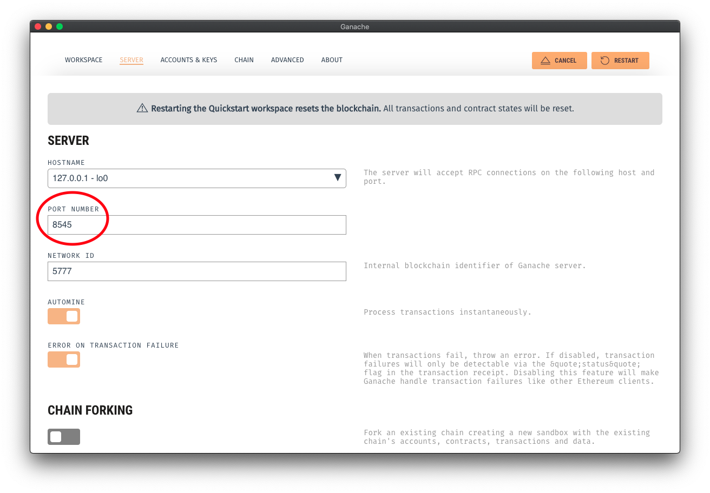

Web 3 JavaScript Libraries
As we mentioned in "Where Do Users Fit in Our Mental Model?" Web 3 JavaScript APIs are critical to connecting users to our blockchain applications. There are a variety of common JavaScript libraries that you can use to connect to Ethereum and develop an interface for your users. Many of the libraries serve the same purpose and have the same functionality, but the syntax differs for each.
The purpose of this lesson is to show the similarities and differences between the main two libraries, Web3.js and ethers.js, so you gain a better understanding of what these libraries do a general level and how each one does it.
If you are using the Brave browser, you may encounter conflicts with the built-in Ethereum wallet and Metamask. If this happens, try using a different browser with Metamask installed.
Truffle
Truffle is the framework that we have covered in the most depth so far in the course. Truffle will connect to a running blockchain specified in the truffle-config.js file, manage deployments via migration scripts and information stored in the truffle artifacts and abstracts away much of the complexity of interacting with contracts (via contract abstractions).
Other libraries handle these in different ways and have different APIs that are useful to review.
Web3.js
Web3.js is one of the most popular JavaScript libraries in Ethereum dApp development. It is currently maintained by Chainsafe, and you can visit the Web3.js repository here.
Formerly, Web3.js was the library that Metamask would injected into your browser. If you had Metamask installed in your browser, you could see the web3 object by opening your browser developer tools. Since 2020, MetaMask has deprecated the injection of Web3.js into the browser and now simply uses window.ethereum. Read more here.
Since MetaMask does not inject it anymore, let's add it ourselves using the following steps:
- Open your browser's developer console. See this article for how to do it for major browsers in each major operating system.
- In the Console, add the following series of Javascript code. Press enter after each line of code:
var script = document.createElement('script');
script.type = 'text/javascript';
script.src = 'script.js';
script.src = 'https://cdn.jsdelivr.net/npm/web3@latest/dist/web3.min.js';
document.head.appendChild(script);
If this executed successfully, it will give us access to the web3 object. If you enter web3 into the console, you should see some auto-suggestions which means its available.
Now, we need to start up a local testnet using Ganache.
Connect to Ganache GUI
Let's connect to Ganache GUI. Start Ganache GUI and use the gear icon to change the Ganache port to 8545.


connect Metamask to Localhost 8545
Import Ganache Account into MetaMask
Note: These keys are not considered safe for production. You should not use them out in the wild!
You can easily import Ganache GUI accounts into Metamask by importing via the private key. Click the key icon on the right side of Ganache GUI to get the associated account private key. To import the account into Metamask, select "Import Account" in the Metamask accounts dropdown, and paste in the private key.


Copy the public address of another address in your Ganache GUI. This is the address we'll send our transaction to!
Sending the Transaction
We need to connect our web3 object to our MetaMask account. We do that by running the following commands:
ethereum.request({ method: 'eth_requestAccounts' })
This should pop-up a MetaMask window asking you to connect to our website, please click "Confirm"
Now that we have access to MetaMask, we can connect MetaMask to our web3 object by running the following:
web3 = new Web3(window.ethereum)
Checking the account
Once you are connected to Ganache GUI through Metamask, you can send transactions on the Ganache GUI network through the injected web3 object in the browser console. Typing web3.currentProvider.selectedAddress should return your current account address.

Sending a Transaction
Grab the second public address you copied earlier from your Ganache GUI. Use the following code snippet as your transaction information.
var transaction = {
from: web3.currentProvider.selectedAddress,
to: "ENTER_SECOND_ADDRESS_HERE",
value: web3.utils.toWei("0.001", "ether")
}
Th "to" account is the second account that is generated by the Quickstart in Ganache GUI.
Now sending a transaction is as easy as entering ethereum.request({ method: 'eth_sendTransaction', params: [transaction]}) in the console and Metamask will pop up, asking you to sign the transaction. If you get an error, you may need to reset the web3 provider. You can do that with this line of code web3.setProvider(web3.currentProvider).

Nonce Mismatch Errors
If you use Metamask accounts on different development blockchains, the nonce counts may get out of sync, in which case you will see an error when trying to execute a transaction. Metamask tracks the account nonce independently so this can get out of sync with the account nonce on the blockchain network that you are trying to interact with.

If this happens, it is a simple fix. Open Metamask and click the account icon on the upper right and select "Settings". In the "Advanced" area, select "Reset Account".


If you were seeing this error, reset your account and try sending the transaction again. Metamask will get the correct account nonce from the blockchain network. When the transaction succeeds, you should see the new account balances reflected on Ganache GUI.
You can check the balance of these accounts with the line let balance = await ethereum.request({ method: 'eth_getBalance', params:[web3.currentProvider.selectedAddress, "latest"]}), this returns the account balance expressed in Wei in hexadecimal format and can be converted to ether like so parseInt(balance) / 10**18.
This is just a quick intro to sending transaction with web3.js v1.0. You can learn more about how to use it via the docs and specifically about how to connect to a contract via this section.
Keep in mind that this library is still in development, so if you run into any bugs, please report them!
Ethers.js
Let's try connecting to a different library, the ethers.js library.
We'll have to follow the same steps to import it as above with Web3.js:
var script = document.createElement('script');
script.type = 'text/javascript';
script.src = 'script.js';
script.src = 'https://cdn.ethers.io/lib/ethers-5.1.umd.min.js';
document.head.appendChild(script);
Connect to the Web 3 provider
In the browser console, you can connect ethers.js to the current network by accessing the provider given by Metamask, then set it is as the "signer".
// A Web3Provider wraps a standard Web3 provider, which is // what Metamask injects as window.ethereum into each page const provider = new ethers.providers.Web3Provider(window.ethereum) const provider = new ethers.providers.Web3Provider(web3.currentProvider); // There is only ever up to one account in MetaMask exposed const signer = provider.getSigner();
Now that Metamask is set as the signer, you can send a transaction. Check the "signer" API of ethers.js to see how to send a transaction. Something like "signer.sendTransaction(transaction)" should work, but what does a transaction look like in ethers.js?
{
// Required unless deploying a contract (in which case omit)
to: addressOrName, // the target address or ENS name
// These are optional/meaningless for call and estimateGas
nonce: 0, // the transaction nonce
gasLimit: 0, // the maximum gas this transaction may spend
gasPrice: 0, // the price (in wei) per unit of gas
// These are always optional (but for call, data is usually specified)
data: "0x", // extra data for the transaction, or input for call
value: 0, // the amount (in wei) this transaction is sending
chainId: 3 // the network ID; usually added by a signer
}
For a simple ether transfer, you can get away with:
var transaction = {
to: "TO_ADDRESS_HERE",
value: ethers.utils.parseEther("1")
}
And to send it, enter signer.sendTransaction(transaction) in the browser console.

Confirm the transaction and verify that the account balances have changed in Ganache GUI.
Please explore the Ether.js documentation to see all of the things that it can do.
Summary
As a developer, you can use different JavaScript libraries to interact with Ethereum blockchains. Many of the JavaScript libraries do many of the same things, but they may handle transaction signers or providers differently or have different ways of connecting to contracts and listening to events. The library you choose is primarily a matter of personal preference.
We focus on using web3.js in this course, but introduce ethers.js because it is a popular alternative.
Additional Material
- Article: Web3 vs ethers Part I and Part II by Academy's own Tom Hay and Robbie K.
- Course: Learn Ethers.js (Chainshot) Use Chainshot's excellent interactive interface to learn more about ethers.js